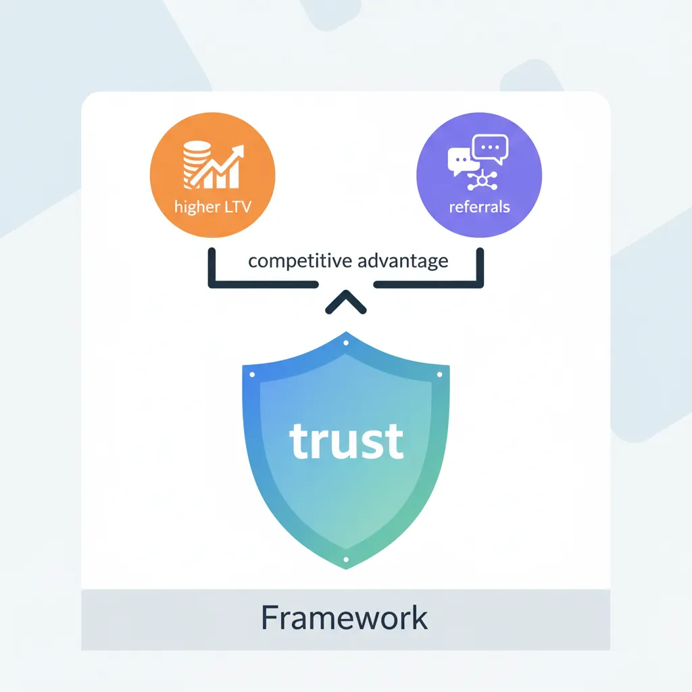
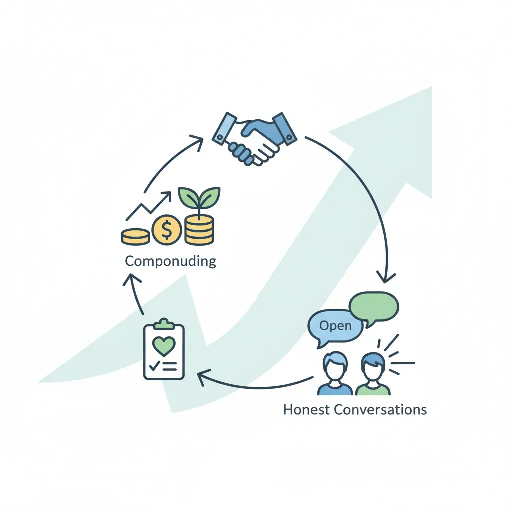
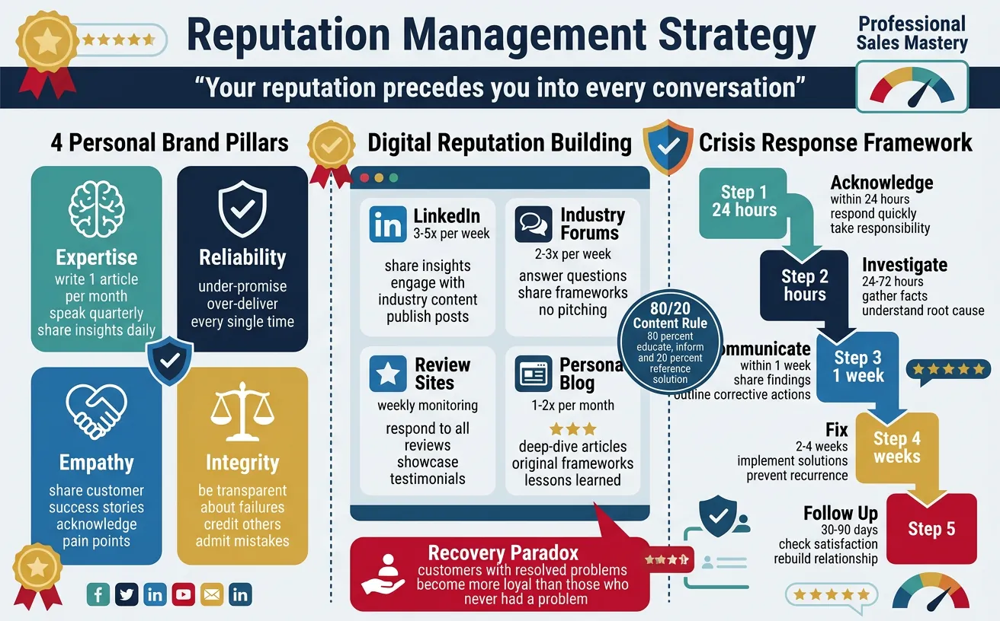
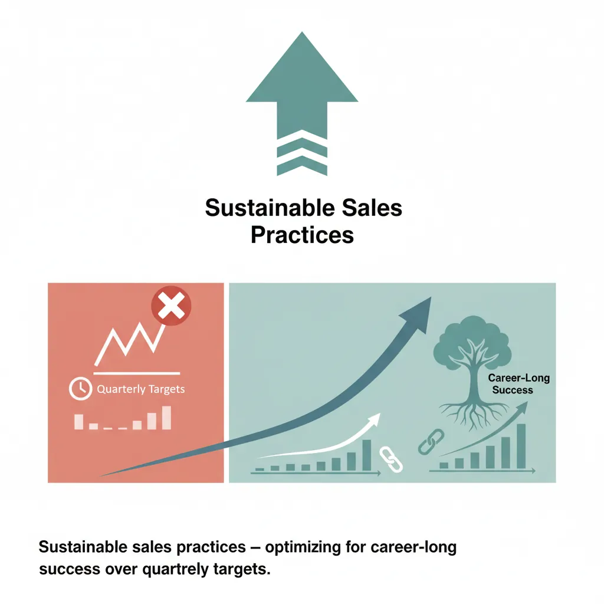

We use cookies to enhance your browsing experience, serve personalized content, and analyze our traffic.
By clicking "Accept All", you consent to our use of cookies. See our
Privacy Policy
for more information.
Ethical selling isn't a constraint—it's a competitive advantage. Research consistently shows that trust-based selling produces higher customer lifetime values, lower churn, and more referrals than manipulative tactics. The most successful salespeople build reputations that make selling easier over time.

Figure 1: Ethical selling framework — trust-based selling as a competitive advantage driving higher LTV and referrals
The Ethics ROI: Companies with high-trust sales cultures achieve 2.5x higher revenue growth than low-trust competitors. Customer retention improves 40-60% when sellers prioritize genuine customer outcomes over quota pressure.
The Economics of Ethical Selling
Metric
Manipulative Approach
Ethical Approach
Close Rate
Higher short-term (30-40%)
Lower initial, higher long-term (25-35%)
Churn Rate
High (25-40% annual)
Low (5-15% annual)
Referral Rate
Minimal (<5%)
Strong (20-40% of new business)
Deal Size Growth
Flat or declining
30-50% expansion per renewal
Career Longevity
2-3 years per company
5-10+ years with reputation capital
Guiding Principles
The 7 Pillars of Ethical Selling
Pillar
Definition
In Practice
1. Honesty
Never misrepresent capabilities, pricing, or outcomes
"We can do X and Y, but Z isn't our strength—here's who does it well"
2. Transparency
Share information that helps the buyer decide, even if it's inconvenient
Truly care about the customer's outcome, not just the deal
Ask "Is this the right solution for you?" not "How can I close you?"
4. Fairness
Price and negotiate in good faith
Don't exploit information asymmetry or buyer urgency
5. Accountability
Own mistakes and make them right promptly
"We made an error in the proposal. Here's the corrected version—I apologize"
6. Respect
Value the buyer's time, intelligence, and decision process
No pressure tactics, no manufactured urgency, no guilt-tripping
7. Confidentiality
Protect customer and competitive information
Never share one customer's data/pricing/strategy with another
Ethical Boundaries
The Ethics Spectrum
Category
Ethical
Gray Area
Unethical
Urgency
Genuine deadline (price increase, end of fiscal year)
Implied scarcity ("others are looking at this")
Fabricated urgency ("price goes up tomorrow" when false)
Social Proof
Real customer testimonials with permission
Vague claim ("industry leaders use us")
Fabricated reviews or fake case studies
Competitor Info
Factual comparison from public data
Spin that emphasizes only weaknesses
Spreading misinformation about competitors
Pricing
Clear, transparent pricing structure
Complex pricing that makes comparison hard
Hidden fees or deceptive bundling
Promises
Commit only to what you can deliver
Optimistic timelines without caveats
Promising features that don't exist
The Newspaper Test: Before any sales action, ask: "Would I be comfortable if this interaction appeared on the front page of a newspaper?" If not, reconsider. Your reputation is built one interaction at a time.
Trust Building
Trust compounds like interest. Every kept promise, honest conversation, and genuine recommendation adds to your trust balance. Over time, this balance creates a moat that no competitor can easily cross.

Figure 2: Trust building cycle — trust compounds like interest through kept promises and honest conversations
The Trust Equation
Trust = (Credibility + Reliability + Intimacy) ÷ Self-Orientation — Charles H. Green, "The Trusted Advisor"
Credibility: "I can trust what they say about their expertise" Reliability: "I can depend on them to follow through" Intimacy: "I feel safe sharing information with them" Self-Orientation: (Denominator) "Are they focused on me or themselves?"
Trust-Building Actions by Stage
Relationship Stage
Trust Actions
Anti-Patterns
First Contact
Research thoroughly, personalize outreach, offer value before asking
"We don't have that today. It's on our roadmap for Q3. In the meantime, here's a workaround…"
High — honesty + solution-focus
Competitor is stronger for their use case
"For your specific scenario, [Competitor] might be a better fit. However, if [criteria] matters more…"
Very High — against self-interest
Internal issue affecting delivery
"We had a team change that delayed timelines by 2 weeks. Here's our updated plan and what we're doing to prevent this…"
High — accountability
Pricing mistake in your favor
"I noticed we quoted you 20% below our standard rate. Here's the correct pricing—I wanted you to have accurate numbers"
Extremely High — integrity signal
Credibility Building
The Credibility Flywheel
Credibility Source
How to Build
Time to Impact
Domain Expertise
Industry certifications, published content, speaking at events
6-12 months
Track Record
Case studies, measurable results, customer testimonials
1-2 years
Network Endorsement
Mutual connections, LinkedIn recommendations, community involvement
Ongoing
Thought Leadership
Blog posts, webinars, original research, frameworks
3-6 months
Consistency
Always follow through, respond promptly, deliver on promises
Every interaction
Reputation Management
Your reputation precedes you into every conversation. In today's connected world, prospects research you before responding to outreach. A strong personal brand makes selling easier; a damaged one makes it nearly impossible.

Figure 4: Reputation management strategy — building a personal brand that precedes you into every conversation
Known for doing the right thing even when it's hard
Be transparent about failures, credit others, admit mistakes
Online Presence
Digital Reputation Building
Platform
Strategy
Frequency
LinkedIn
Share insights, engage with industry content, publish long-form posts, request recommendations
3-5x per week
Industry Forums
Answer questions, share frameworks, contribute to discussions without pitching
2-3x per week
Review Sites
Respond to reviews (positive and negative), showcase genuine testimonials
Weekly monitoring
Personal Blog
Deep-dive articles on industry trends, original frameworks, lessons learned
1-2x per month
The 80/20 Content Rule: 80% of your content should educate, inform, or entertain without mentioning your product. 20% can reference your solution—always in context of customer outcomes, never as a pitch.
Crisis Management
Reputation Crisis Response Framework
Phase
Actions
Timeline
1. Acknowledge
Respond quickly, take responsibility, don't deflect or make excuses
Share findings transparently, outline corrective actions, set expectations
Within 1 week
4. Fix
Implement solutions, prevent recurrence, go beyond minimum resolution
2-4 weeks
5. Follow Up
Check customer satisfaction, share process improvements, rebuild relationship
30-90 days
Recovery Paradox: Customers who experience a problem that is resolved exceptionally well often become more loyal than customers who never had a problem. Handle crises as opportunities to demonstrate your values.
Sustainable Practices
Sustainable selling means optimizing for career-long success rather than quarterly targets. The sellers who thrive for decades are those who build systems that create value for everyone involved.

Figure 5: Sustainable sales practices — optimizing for career-long success over quarterly targets
Short-Term vs. Long-Term Selling
Dimension
Short-Term Focus
Sustainable Focus
Goal
Hit this quarter's number
Build lifelong customer relationships
Qualification
"Can they buy?" → push to close
"Should they buy?" → ensure genuine fit
Pricing
Maximize deal size now
Price fairly, grow through expansion
Competition
Win at all costs
Win on merit, recommend competitors when they're better
Post-Sale
Move to next deal immediately
Ensure success, then leverage for referrals
Customer Advocacy
True customer advocacy means being your customer's voice inside your organization—sometimes even when it conflicts with your company's short-term interests.
Advocacy Actions
Action
What It Looks Like
Impact
Champion Their Needs
Escalate product feedback, push for roadmap features they need
Customer feels heard and valued
Prevent Overselling
Recommend smaller package when it's the right fit
Trust deepens, expansion happens naturally later
Proactive Problem Solving
Alert customers to potential issues before they encounter them
Demonstrates genuine care beyond the sale
Connect Them
Introduce customers to peers, industry contacts, resources
Positions you as a value-creating partner
Legacy Building
The Legacy Test: At the end of your career, what do you want people to say? "They always hit their numbers" or "They genuinely helped every person they worked with—and the numbers followed naturally"?
Building Your Sales Legacy
Legacy Element
Action
Mentor Others
Coach junior reps on ethical practices, share your frameworks openly
Set Standards
Advocate for ethical guidelines in your organization, refuse to cut corners
Document Wisdom
Write about your experiences, create playbooks that emphasize doing right
Give Back
Pro bono consulting, industry volunteering, nonprofit board service
Ethics & Reputation Canvas
Document your ethical selling principles and reputation strategy:
Ethics & Reputation Canvas
Define your ethical selling framework. Download as Word, Excel, PDF, or PowerPoint.
Draft auto-saved
All data stays in your browser. Nothing is sent to or stored on any server.
Exercises
Exercise 130 min
Ethics Audit
Review your last 10 sales interactions. For each, rate yourself on the 7 pillars of ethical selling (1-5 scale). Where did you score highest? Lowest? Identify 3 specific actions to improve your weakest areas.
Exercise 245 min
Trust Equation Assessment
Score yourself on each component of the Trust Equation (Credibility, Reliability, Intimacy, Self-Orientation) for your top 5 accounts. Ask a trusted colleague to score you independently. Compare results and create an improvement plan for any gaps >1 point.
Exercise 320 min
Reputation Scorecard
Google yourself. Review your LinkedIn profile, any reviews mentioning you, and your digital footprint. Score your online presence against the 4 Personal Brand Pillars (Expertise, Reliability, Empathy, Integrity). Create a 90-day plan to strengthen your weakest pillar.
Key Takeaways
Ethics are profitable: Trust-based selling produces higher LTV, more referrals, and lower churn